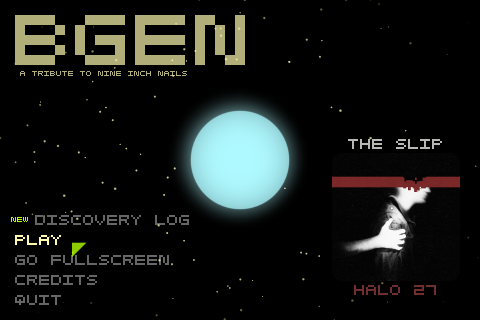
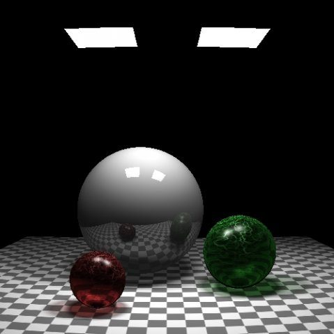

Francis Xavier Pulikotil
LinkedIn | Twitter | Instagram
Publications
Adapt Cast (Oct 29, 2015)
Enable passing an argument by reference, to a function which expects an argument of a different type.
ArrayView, StringView (Dec 02, 2014)
Immutable, non-owning, efficient views over all or part of existing arrays and strings.
Switching on custom objects (Nov 14, 2014)
A switch-like construct for custom objects to improve readability.
A Type-safe Generic Pointer (Aug 17, 2010)
A safer alternative to void*, any_ptr can point to any type of object and provide type-safe, const-correct access to it.
A Simple C++ Object Loader (Oct 06, 2009)
A guide to deserializing objects using Daabli. Demonstrates how easy it is to load objects, enumerations, pointers and STL containers using Daabli. Also discusses Daabli's flexible string conversion mechanism.
Super Factory (Jul 17, 2009)
A single unified interface for creating (almost) any kind of object in C++.
Stringizing C++ Enums (Oct 25, 2008)
A simple method to convert a C++ enumeration to its equivalent string representation and vice versa.
Sealing Classes in C++ (Nov 19, 2007)
A method to create sealed classes in C++.
Projects
B-Gen
A music-based game that uses music from Nine Inch Nails’ album - The Slip. (C++, SDL, OpenGL, OpenAL)

Frankie's Quest
A short puzzle game with story elements. (C++, SDL, OpenGL, OpenAL, MinPSPW)
Daabli
C++ | C#
A simple cross-platform deserialization framework for C++ and C#.
RayWatch
A simple raytracer written by my brother, Angelo Rohit, for educational purposes. (C++, SDL)

World Modeler Project
Source | flipCode.org IOTD
Something I did a long time ago, back when I was learning graphics programming. Some things of interest in the source: BSP tree generation from polygon soup; static light-map generation using ray-tracing. (VC++ 6.0, Visual Basic 6.0, Direct3D 7.0)